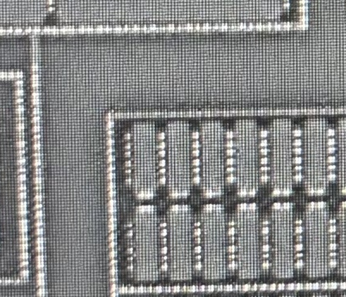
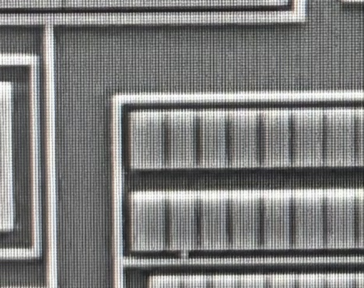
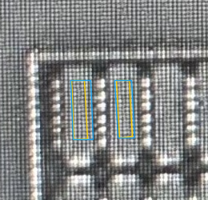

POLY：保留横向批准，纠正竖向尺寸不足
P-H01蓝色位置/宽度通过；P-V01蓝色比黄色贴合，但明显小于实际范围，完整几何门不通过。这里不生成新的放大轮廓，也不要求重复批准。
两张照片仅并列提供上下文，原生范围不同，尚未细配准。切换不代表坐标相同；没有AA轮廓跨层投影。

并列观察
POLY原图：CT列之间的主体与端部上下文

AA原图：可观察竖向暗线与扩散结构

上一轮竖向结果：留作失败对照

黄色为旧内部core；蓝色是小范围法向修订。长度固定在旧core，不能据此判断完整栅长。规则轮廓、两栅分开，不等于实际尺寸完整。
修订后的判断顺序
- AI结合器件类型、AA和POLY照片，先理解整个栅/电阻主体、边缘与引出；分清内部支持、候选外形和未知。
- 核对局部跨层对应，再利用AA沟道关系约束POLY；POLY允许伸出AA。
- 算法在完整候选范围中辅助定位边缘，不能被内部core的小窗口限制。
- 检查实际范围覆盖、规则性、两栅隔离与来源对应；相对更贴合但明显偏小仍不通过。
旧版完整对照（历史状态） · 本次反馈及原生范围 · 修订工作方法